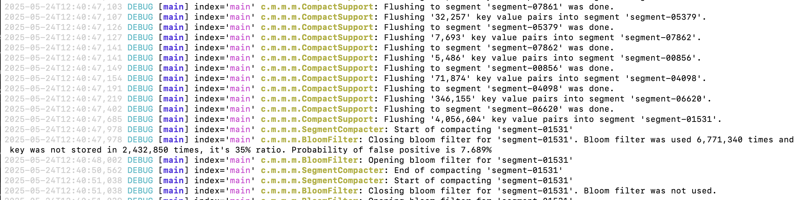

Logging
HestiaStore uses slf4j for internal logging. So you should include your preferred logging library like logback, log4j, or another with a bridge to slf4j. In case you use log4j, look at the example configuration:
Example configuration File for log4j
Bellow is the example Log4j2 configuration used in HestiaStore:
<?xml version="1.0" encoding="UTF-8"?>
<Configuration status="INFO">
<Appenders>
<Console name="Console" target="SYSTEM_OUT">
<PatternLayout
pattern="%style{%d{ISO8601}}{white} %highlight{%-5level }[%style{%t}{bright,blue}] %style{%-C{1.mv}}{bright,yellow}: %msg%n%throwable" />
</Console>
<Console name="indexAppender" target="SYSTEM_OUT">
<PatternLayout
pattern="%style{%d{ISO8601}}{white} %highlight{%-5level }[%style{%t}{bright,blue}] index='%style{%X{index.name}}{magenta}' %style{%-C{1.mv}}{bright,yellow}: %msg%n%throwable" />
</Console>
</Appenders>
<Loggers>
<logger name="com.hestiastore.index" level="DEBUG" additivity="false">
<appender-ref ref="indexAppender" />
</logger>
<Root level="DEBUG">
<AppenderRef ref="Console"/>
</Root>
</Loggers>
</Configuration>
this example will produce logs look like this:

Log Appenders
- Console (default): Used by all components not explicitly assigned a logger. Outputs time, level, thread, and class name.
- indexAppender: Specifically configured for
com.hestiastore.index, outputs additional context (index.name) for disambiguating messages from different index instances.
Customizing Logging Levels
You can control verbosity by modifying the <logger> or <Root> levels:
ERROR,WARN,INFO,DEBUG, orTRACE- For example, to suppress general debug logs:
Disabling Index Logs
If you want to disable index-specific logging entirely, remove or comment out the com.hestiastore.index logger section. Alternatively log level for package could be set to "ERROR".
Recommendations
- Use
DEBUGduring development or troubleshooting. - Switch to
INFOorWARNin production to reduce log noise. - Ensure you clear MDC values (
ThreadContext.clearAll()) in thread pools to prevent memory leaks or incorrect context reuse.
Logging Implementation
The indexAppender uses a mapped diagnostic context (MDC) value index.name, which should be set programmatically:
This allows the log output to include which index instance the message is referring to, aiding in debugging concurrent access or behavior across multiple indexes.